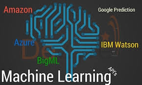
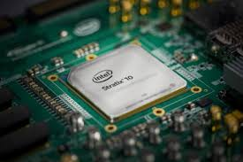
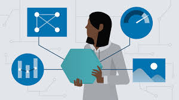
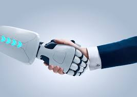

1. Natural Language Generation:
Saying (or writing) the right words in the right sequence to convey a clear message that can be easily understood by the listener (or reader) can be a tricky business. For a machine, which processes information in an entirely different way than the human brain does, it can be trickier still.
Solving this issue has been the key focus of the burgeoning field of Natural Language Generation (NLG) for years beyond counting. Natural language generation, a field which has made great strides of late, has begun to manifest in many areas of our lives. It is currently being used in customer service to generate reports and market summaries.
2. Speech recognition
Transcribe and transform human speech into format useful for computer applications. Currently used in interactive voice response systems and mobile applications. Every day, more and more systems incorporate the transcription and transformation of human language into useful formats suitable for computers.
IL-Header-Communicating-with-the-Future
Companies offering speech recognition services include NICE, Nuance Communications, OpenText and Verint Systems.

3. Machine Learning Platforms
These days, computers can also learn, and they can be incredibly intelligent!
Machine learning is a subdiscipline of computer science and a branch of artificial intelligence. Its goal is to develop techniques that allow computers to learn.
By providing algorithms, APIs (application programming interface), development and training tools, big data, applications and other machines, machine learning platforms are gaining more and more traction every day.
They’re currently being used in diverse business activities, mainly for prediction or classification. Companies focused in machine learning include Amazon, Fractal Analytics, Google, H2O.ai, Microsoft, SAS, Skytree.

4. Virtual Agents
There’s no denying that virtual agents – or “chat bots” (or simply, bots) – are experiencing a tremendous resurgence in interest, and along with that, a rapid advance in innovation and technology.
Currently used in customer service and support and as a smart home manager. Some of the companies that provide virtual agents include Amazon, Apple, Artificial Solutions, Assist AI, Creative Virtual, Google, IBM, IPsoft, Microsoft, Satisfi.

5. Decision Management
Intelligent machines are capable of introducing rules and logic to artificial intelligence systems and can be used for initial setup/training, ongoing maintenance and tuning.
It is used in a wide variety of enterprise applications, assisting in or performing automated decision-making. Some of the companies that provide this are Advanced Systems Concepts, Informatica, Maana, Pegasystems, UiPath.

6. AI-Optimized Hardware
Companies are investing heavily in ML/AI with hardware designs intended to greatly accelerate the next generation of applications. Graphics processing units (GPU) and appliances specifically designed and architected to efficiently run AI-oriented computational jobs.
Some of the companies focused on AI-Optimized Hardware includes Alluviate, Cray, Google, IBM, Intel, Nvidia.

7. Deep Learning Platforms
Deep learning is the fastest growing field and the new big trend in machine learning. A set of algorithms that use artificial neural networks to learn in multi-levels, corresponding to different levels of abstraction.
Some of the applications of deep learning are automatic speech recognition, image recognition/Optical character recognition, NLP, and classification/clustering/prediction of almost any entity that can be sensed & digitized.
Deep learning platform services providers and suppliers include Deep Instinct, Ersatz Labs, Fluid AI, MathWorks, Peltarion, Saffron Technology, Sentient Technologies.

8. Robotic Process Automation
Robotic processes automation is possible thanks to scripts and methods that mimic and automate human tasks to support corporate processes. It is now being used in special situations where it’s too expensive or inefficient to hire humans for a specific job or task.
We need to remember artificial intelligence is not meant to replace humans, but to complement their abilities and reinforce human talent.
Some of the companies focused on this include Advanced Systems Concepts, Automation Anywhere, Blue Prism, UiPath, WorkFusion.

9. Text Analytics and NLP
Natural language processing (NLP) is concerned with the interactions between computers and human (natural) languages. This technology uses text analytics to understand the structure of sentences, as well as their meaning and intention, through statistical methods and machine learning.
They are also being use by a huge array of automated assistants and apps to extract unstructured data.
Some of the services providers and suppliers of these technologies include Basis Technology, Coveo, Expert System, Indico, Knime, Lexalytics, Linguamatics, Mindbreeze, Sinequa, Stratifyd and Synapsify.
10. Biometrics This technology deals with the identification, measurement and analysis of physical aspects of the body’s structure and form and human behavior. It allows more natural interactions between humans and machines, including interactions related to touch, image, speech and body language recognition. This technology is currently mostly being used for market research. Suppliers of this technologies include 3VR, Affectiva, Agnitio, FaceFirst, Sensory, Synqera and Tahzoo.